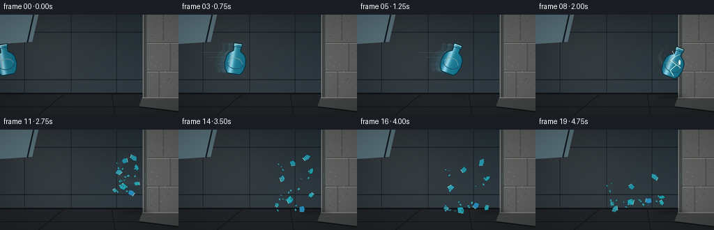
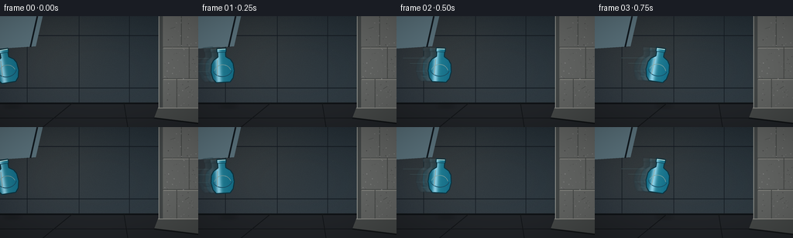
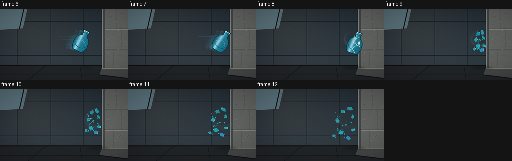

CODING AGENTS AS PIXEL WORLD MODELS
traex/GPT-5.6-Sol · phygen_132
点击播放 · 原生 RGB 像素
逐轮保存的候选
回放视频、检查图与代码变化。
每份候选均可单独播放。实际图片检查记录在下方工具轨迹中。
候选 01播放与检查图
点击播放 · 原生 RGB 像素


展开代码变化
--- 上一保存版本
+++ 本次保存版本
@@ -0,0 +1,276 @@
+from pathlib import Path
+import math
+import json
+import numpy as np
+from PIL import Image, ImageDraw, ImageFilter
+import artifact_io
+
+CASE_DIR = Path(__file__).resolve().parent
+SPEC = json.loads((CASE_DIR / 'task_spec.json').read_text())
+W,H,N,FPS = SPEC['width'],SPEC['height'],SPEC['frames'],SPEC['fps']
+S = 4
+rng = np.random.default_rng(132)
+
+def sc(v): return int(round(v*S))
+def pts(poly): return [(sc(x),sc(y)) for x,y in poly]
+
+def base_background():
+ h,w=H*S,W*S
+ yy,xx=np.mgrid[0:h,0:w]
+ # blue-grey industrial room, with subtle gritty texture
+ n=rng.normal(0,1.9,(h,w))
+ left=np.zeros((h,w,3),dtype=float)
+ left[...,0]=30 + 16*(yy/h) + 7*(xx/w)
+ left[...,1]=40 + 17*(yy/h) + 8*(xx/w)
+ left[...,2]=50 + 17*(yy/h) + 5*(xx/w)
+ # soft warm shaft from upper left
+ glow=np.exp(-((xx-sc(55))**2/(2*sc(70)**2)+(yy-sc(35))**2/(2*sc(60)**2)))
+ left[...,0]+=16*glow; left[...,1]+=12*glow; left[...,2]+=6*glow
+ left += n[...,None]
+ arr=np.clip(left,0,255).astype(np.uint8)
+ im=Image.fromarray(arr,'RGB').convert('RGBA')
+ d=ImageDraw.Draw(im,'RGBA')
+ # rear concrete panel seams and structure
+ d.line(pts([(0,25),(208,25)]), fill=(21,27,34,100), width=sc(1))
+ d.line(pts([(0,93),(208,93)]), fill=(19,26,32,90), width=sc(1))
+ for x in [35,102,167]:
+ d.line(pts([(x,0),(x,118)]), fill=(20,27,34,70), width=sc(.7))
+ # high window panes at far left
+ d.polygon(pts([(0,0),(55,0),(46,39),(0,42)]), fill=(92,116,126,30))
+ d.line(pts([(48,0),(39,40)]), fill=(18,26,32,90), width=sc(2))
+ # floor
+ d.polygon(pts([(0,112),(211,112),(256,126),(256,144),(0,144)]), fill=(34,37,41,255))
+ d.line(pts([(0,113),(211,113)]),fill=(15,19,22,160),width=sc(2))
+ # perspective floor seams
+ d.line(pts([(55,144),(94,112)]),fill=(19,22,25,180),width=sc(1))
+ d.line(pts([(165,144),(160,112)]),fill=(19,22,25,180),width=sc(1))
+ d.line(pts([(0,132),(241,132)]),fill=(21,24,27,180),width=sc(1))
+ # massive concrete wall, front face begins x=210
+ d.rectangle([sc(210),0,sc(256),sc(127)],fill=(101,103,101,255))
+ # wall edge bevel / thickness
+ d.polygon(pts([(205,0),(210,0),(210,127),(205,120)]),fill=(68,72,72,255))
+ d.line(pts([(205,0),(205,120)]),fill=(151,153,148,180),width=sc(1))
+ # courses / seams
+ for y in [40,81,121]:
+ d.line(pts([(210,y),(256,y)]),fill=(69,72,71,150),width=sc(1))
+ d.line(pts([(211,y+1),(256,y+1)]),fill=(143,143,137,75),width=sc(1))
+ d.line(pts([(234,0),(234,40)]),fill=(71,74,72,120),width=sc(1))
+ d.line(pts([(244,40),(244,81)]),fill=(72,74,72,130),width=sc(1))
+ d.line(pts([(228,81),(228,121)]),fill=(72,75,73,130),width=sc(1))
+ # deterministic aggregate flecks / pits
+ rr=np.random.default_rng(812)
+ for _ in range(120):
+ x=float(rr.uniform(212,256)); y=float(rr.uniform(2,121)); r=float(rr.uniform(.15,.7))
+ c=int(rr.integers(73,139)); a=int(rr.integers(30,100))
+ d.ellipse([sc(x-r),sc(y-r),sc(x+r),sc(y+r)],fill=(c,c+1,c,a))
+ # footing: reinforces immovability
+ d.polygon(pts([(204,119),(256,119),(256,139),(199,132)]),fill=(72,75,74,255))
+ d.line(pts([(204,119),(256,119)]),fill=(150,150,144,140),width=sc(1))
+ d.line(pts([(199,132),(256,139)]),fill=(18,21,23,150),width=sc(2))
+ # tiny scratches that stay unchanged
+ d.line(pts([(220,16),(226,14)]), fill=(66,68,67,100),width=sc(.6))
+ d.line(pts([(239,94),(244,91)]), fill=(67,68,66,90),width=sc(.6))
+ return im
+
+BG=base_background()
+
+def rotated(poly, cx,cy, ang):
+ ca,sa=math.cos(ang),math.sin(ang)
+ return [(cx+x*ca-y*sa,cy+x*sa+y*ca) for x,y in poly]
+
+def add_shadow(frame,cx,cy,wide=16,alpha=90):
+ lay=Image.new('RGBA',frame.size,(0,0,0,0)); d=ImageDraw.Draw(lay,'RGBA')
+ d.ellipse([sc(cx-wide),sc(cy-2),sc(cx+wide),sc(cy+2)],fill=(0,0,0,alpha))
+ lay=lay.filter(ImageFilter.GaussianBlur(sc(2.3)))
+ frame.alpha_composite(lay)
+
+def make_vase(angle, blur=False):
+ # oversized local canvas at final supersampled scale
+ ww,hh=sc(58),sc(68)
+ lay=Image.new('RGBA',(ww,hh),(0,0,0,0)); mask=Image.new('L',(ww,hh),0)
+ md=ImageDraw.Draw(mask)
+ cx,cy=ww/2,hh/2
+ contour=[(-6,-23),(6,-23),(6,-19),(5,-17),(5,-12),(11,-8),(14,-3),(15,7),(13,16),(9,21),(-9,21),(-13,16),(-15,7),(-14,-3),(-11,-8),(-5,-12),(-5,-17),(-6,-19)]
+ p=[(cx+sc(x),cy+sc(y)) for x,y in contour]
+ md.polygon(p,fill=255)
+ # ceramic glaze gradient
+ a=np.zeros((hh,ww,4),dtype=np.uint8)
+ X=np.arange(ww)[None,:]
+ xnorm=(X-cx)/sc(16)
+ light=np.exp(-((xnorm+0.34)/0.22)**2)
+ edge=np.clip(np.abs(xnorm),0,1)
+ a[...,0]=np.clip(33+115*light-15*edge,0,255)
+ a[...,1]=np.clip(128+93*light-20*edge,0,255)
+ a[...,2]=np.clip(151+91*light-15*edge,0,255)
+ a[...,3]=np.asarray(mask)
+ ceramic=Image.fromarray(a,'RGBA')
+ lay.alpha_composite(ceramic)
+ ld=ImageDraw.Draw(lay,'RGBA')
+ # rim and glaze decorations
+ ld.line([(cx-sc(6),cy-sc(22)),(cx+sc(6),cy-sc(22))],fill=(199,244,239,255),width=sc(1.1))
+ ld.line([(cx-sc(5),cy-sc(18)),(cx+sc(5),cy-sc(18))],fill=(13,80,105,210),width=sc(.7))
+ ld.arc([cx-sc(13),cy-sc(7),cx+sc(13),cy+sc(14)],15,165,fill=(17,91,120,180),width=sc(1))
+ ld.arc([cx-sc(11),cy-sc(2),cx+sc(11),cy+sc(18)],195,345,fill=(186,232,222,150),width=sc(.8))
+ # hard contour
+ ld.line(p+[p[0]],fill=(10,52,66,240),width=sc(1.2),joint='curve')
+ # specular vertical highlight
+ ld.line([(cx-sc(6),cy-sc(8)),(cx-sc(7),cy+sc(12))],fill=(221,255,247,150),width=sc(1.1))
+ # rotate whole object
+ deg=-angle*180/math.pi
+ lay=lay.rotate(deg,resample=Image.Resampling.BICUBIC,expand=False)
+ if blur: lay=lay.filter(ImageFilter.GaussianBlur(sc(.45)))
+ return lay
+
+def paste_center(frame,im,x,y,opacity=255):
+ if opacity<255:
+ im=im.copy(); al=im.getchannel('A').point(lambda v:v*opacity//255); im.putalpha(al)
+ frame.alpha_composite(im,(sc(x)-im.width//2,sc(y)-im.height//2))
+
+def draw_speed(frame, f, cx,cy):
+ if f==0: return
+ lay=Image.new('RGBA',frame.size,(0,0,0,0)); d=ImageDraw.Draw(lay,'RGBA')
+ # horizontal streaks behind the violently thrown vase
+ lengths=[34,25,17,10]
+ offs=[-10,-3,7,14]
+ for j,(ln,oy) in enumerate(zip(lengths,offs)):
+ y=cy+oy
+ d.line(pts([(cx-14-ln,y),(cx-17,y)]),fill=(142,208,214,68-9*j),width=sc(.7))
+ lay=lay.filter(ImageFilter.GaussianBlur(sc(.35)))
+ frame.alpha_composite(lay)
+
+def draw_intact_vase(frame, f, cx,cy,ang):
+ draw_speed(frame,f,cx,cy)
+ # faint exposure trail emphasizes extreme speed
+ if f>0:
+ for k,op in [(2,22),(1,45)]:
+ ghost=make_vase(ang-.03*k,True)
+ paste_center(frame,ghost,cx-8*k,cy-.5*k,op)
+ vase=make_vase(ang)
+ paste_center(frame,vase,cx,cy)
+
+# physically advanced fragment states after impact. x/y in logical coordinates.
+frag_specs=[]
+rr=np.random.default_rng(456)
+# hand-selected large shards then small chips
+base_specs=[
+(-7,-14,-5.1,-4.8,8,8,0.55),(-1,-15,-2.7,-6.0,7,11,-0.38),
+(-10,-4,-7.0,-2.8,9,7,0.65),(-7,7,-5.7,0.4,10,9,-0.48),
+(-2,12,-3.7,1.8,8,9,0.34),(-12,11,-8.0,1.0,6,6,-0.7),
+(0,-7,-1.8,-4.1,5,9,0.23),(1,5,-2.0,-.3,6,8,-0.25),
+]
+for i,b in enumerate(base_specs): frag_specs.append((*b,i))
+for i in range(18):
+ ox=float(rr.uniform(-10,1)); oy=float(rr.uniform(-17,16)); vx=float(rr.uniform(-9,-2.0)); vy=float(rr.uniform(-7,3.5))
+ sz=float(rr.uniform(1.2,4.4)); hh=float(rr.uniform(1,4.2)); spin=float(rr.uniform(-1.2,1.2))
+ frag_specs.append((ox,oy,vx,vy,sz,hh,spin,8+i))
+
+# simulate each fragment frame-by-frame so floor bounces are coherent
+states=[]
+for spec in frag_specs:
+ ox,oy,vx,vy,sz,hh,spin,idx=spec
+ x,y=201+ox,69+oy
+ seq=[]
+ for n in range(12):
+ seq.append((x,y,vx,vy))
+ x+=vx; y+=vy; vy+=1.45
+ floor=119-max(1,hh*.3)
+ if y>floor:
+ y=floor-(y-floor)*.35
+ vy=-abs(vy)*.43
+ vx*=.72
+ if x<2:
+ x=2; vx=abs(vx)*.25
+ states.append(seq)
+
+def shard_poly(x,y,w,h,a,seed):
+ # irregular triangular/quadrilateral glazed ceramic pieces
+ shape=[(-w*.55,-h*.35),(w*.15,-h*.55),(w*.55,h*.15),(-w*.05,h*.55),(-w*.5,h*.15)]
+ return rotated(shape,x,y,a)
+
+def draw_shatter(frame,f):
+ n=f-8
+ # contact burst and blue ceramic powder, strongest at n=0..2
+ if n<=4:
+ lay=Image.new('RGBA',frame.size,(0,0,0,0)); d=ImageDraw.Draw(lay,'RGBA')
+ strength=max(0,1-n/5)
+ # radial impact lines pointing left from rigid wall
+ rays=[(-31,-19),(-38,-8),(-42,3),(-29,17),(-18,25),(-15,-27),(-48,10)]
+ for j,(rx,ry) in enumerate(rays):
+ if n==0 or j%2==n%2:
+ st=(202+rx*.18*n,69+ry*.18*n)
+ en=(202+rx*(.63+.13*n),69+ry*(.63+.13*n))
+ d.line(pts([st,en]),fill=(192,240,235,int(180*strength)),width=sc(.8 if j else 1.2))
+ # pale dust cloud constrained to left side; wall remains intact
+ for j in range(14):
+ ang=math.pi+(-1.15+2.3*(j/13))
+ rad=(5+2.7*j)+n*(1.3+j*.2)
+ x=204+math.cos(ang)*rad; y=69+math.sin(ang)*rad*.62
+ r=(3.6-j*.12)+n*.8
+ d.ellipse([sc(x-r),sc(y-r),sc(x+r),sc(y+r)],fill=(152,188,184,int(max(0,35*strength))))
+ lay=lay.filter(ImageFilter.GaussianBlur(sc(1.6+0.4*n)))
+ frame.alpha_composite(lay)
+ # special frame of collision: crumpled body against wall, visibly cracked
+ if n==0:
+ vase=make_vase(.38)
+ paste_center(frame,vase,199,69)
+ d=ImageDraw.Draw(frame,'RGBA')
+ # fractures across vase at contact
+ d.line(pts([(196,52),(200,60),(194,66),(202,72),(193,80),(198,88)]),fill=(230,255,248,245),width=sc(.85))
+ d.line(pts([(200,60),(207,57)]),fill=(230,255,248,220),width=sc(.7))
+ d.line(pts([(202,72),(208,76)]),fill=(230,255,248,220),width=sc(.7))
+ # tiny bright contact flash
+ d.ellipse([sc(205),sc(65),sc(208),sc(72)],fill=(233,249,233,160))
+ return
+ d=ImageDraw.Draw(frame,'RGBA')
+ ni=min(n,11)
+ # fragments persist and move under gravity
+ for k,(spec,seq) in enumerate(zip(frag_specs,states)):
+ ox,oy,vx0,vy0,w,h,spin,seed=spec
+ x,y,vx,vy=seq[ni]
+ a=spin*n+seed*.37
+ poly=shard_poly(x,y,w,h,a,seed)
+ if k<8:
+ col=(35+seed%3*8,143+seed%4*8,163+seed%5*7,255)
+ edge=(8,57,70,245)
+ else:
+ col=(66,163,175,235); edge=(15,72,81,220)
+ d.polygon(pts(poly),fill=col)
+ d.line(pts(poly+[poly[0]]),fill=edge,width=sc(.55),joint='curve')
+ # glint on larger pieces
+ if w>5:
+ p0=poly[0]; p1=poly[1]
+ d.line(pts([p0,p1]),fill=(200,245,235,190),width=sc(.55))
+ # impact scuff/powder on wall only (no crack; wall clearly sturdy)
+ if n>=1:
+ alpha=max(25,95-n*4)
+ d.arc([sc(207),sc(61),sc(215),sc(78)],90,270,fill=(58,89,88,alpha),width=sc(1))
+
+def render_frame(f):
+ frame=BG.copy()
+ d=ImageDraw.Draw(frame,'RGBA')
+ if f<=7:
+ # acceleration toward wall, almost straight, slight ballistic dip
+ positions=[8,31,56,82,109,137,164,188]
+ cx=positions[f]; cy=64 + 0.11*(f-3.5)**2
+ ang=-.16 + .105*f
+ # flying shadow on floor races with object
+ shadow_x=min(199,cx+8); add_shadow(frame,shadow_x,117,12,48)
+ draw_intact_vase(frame,f,cx,cy,ang)
+ else:
+ add_shadow(frame,196,118,23,72)
+ draw_shatter(frame,f)
+ # cinematic subtle vignette
+ arr=np.asarray(frame.convert('RGB')).astype(np.float32)
+ yy,xx=np.mgrid[0:H*S,0:W*S]
+ dx=(xx-W*S/2)/(W*S/2); dy=(yy-H*S/2)/(H*S/2)
+ vig=np.clip(1-.12*(dx*dx+dy*dy),.76,1)[...,None]
+ arr=np.clip(arr*vig,0,255).astype(np.uint8)
+ im=Image.fromarray(arr,'RGB').resize((W,H),Image.Resampling.LANCZOS)
+ return np.asarray(im,dtype=np.uint8)
+
+def main():
+ frames=np.stack([render_frame(i) for i in range(N)],axis=0)
+ artifact_io.save(frames,CASE_DIR)
+ print('saved',frames.shape,frames.dtype)
+
+if __name__=='__main__': main()
可观测工具轨迹
实际执行的命令与返回图片。
命令 1exit 0
/bin/bash -lc "cat prompt.txt && printf '\\n--- RULES ---\\n' && cat GENERATION_RULES.md && printf '\\n--- SPEC ---\\n' && cat task_spec.json"
命令 2exit 0
/bin/bash -lc "find . -maxdepth 2 -type f -printf '%p %s bytes\\n' | sort | head -200"
命令 3exit 0
/bin/bash -lc 'cat artifact_io.py'
命令 4exit 0
/bin/bash -lc "cat > generate.py <<'PY'
from pathlib import Path
import math
import json
import numpy as np
from PIL import Image, ImageDraw, ImageFilter
import artifact_io
CASE_DIR = Path(__file__).resolve().parent
SPEC = json.loads((CASE_DIR / 'task_spec.json').read_text())
W,H,N,FPS = SPEC['width'],SPEC['height'],SPEC['frames'],SPEC['fps']
S = 4
rng = np.random.default_rng(132)
def sc(v): return int(round(v*S))
def pts(poly): return [(sc(x),sc(y)) for x,y in poly]
def base_background():
h,w=H*S,W*S
yy,xx=np.mgrid[0:h,0:w]
# blue-grey industrial room, with subtle gritty texture
n=rng.normal(0,1.9,(h,w))
left=np.zeros((h,w,3),dtype=float)
left[...,0]=30 + 16*(yy/h) + 7*(xx/w)
left[...,1]=40 + 17*(yy/h) + 8*(xx/w)
left[...,2]=50 + 17*(yy/h) + 5*(xx/w)
# soft warm shaft from upper left
glow=np.exp(-((xx-sc(55))**2/(2*sc(70)**2)+(yy-sc(35))**2/(2*sc(60)**2)))
left[...,0]+=16*glow; left[...,1]+=12*glow; left[...,2]+=6*glow
left += n[...,None]
arr=np.clip(left,0,255).astype(np.uint8)
im=Image.fromarray(arr,'RGB').convert('RGBA')
d=ImageDraw.Draw(im,'RGBA')
# rear concrete panel seams and structure
d.line(pts([(0,25),(208,25)]), fill=(21,27,34,100), width=sc(1))
d.line(pts([(0,93),(208,93)]), fill=(19,26,32,90), width=sc(1))
for x in [35,102,167]:
d.line(pts([(x,0),(x,118)]), fill=(20,27,34,70), width=sc(.7))
# high window panes at far left
d.polygon(pts([(0,0),(55,0),(46,39),(0,42)]), fill=(92,116,126,30))
d.line(pts([(48,0),(39,40)]), fill=(18,26,32,90), width=sc(2))
# floor
d.polygon(pts([(0,112),(211,112),(256,126),(256,144),(0,144)]), fill=(34,37,41,255))
d.line(pts([(0,113),(211,113)]),fill=(15,19,22,160),width=sc(2))
# perspective floor seams
d.line(pts([(55,144),(94,112)]),fill=(19,22,25,180),width=sc(1))
d.line(pts([(165,144),(160,112)]),fill=(19,22,25,180),width=sc(1))
d.line(pts([(0,132),(241,132)]),fill=(21,24,27,180),width=sc(1))
# massive concrete wall, front face begins x=210
d.rectangle([sc(210),0,sc(256),sc(127)],fill=(101,103,101,255))
# wall edge bevel / thickness
d.polygon(pts([(205,0),(210,0),(210,127),(205,120)]),fill=(68,72,72,255))
d.line(pts([(205,0),(205,120)]),fill=(151,153,148,180),width=sc(1))
# courses / seams
for y in [40,81,121]:
d.line(pts([(210,y),(256,y)]),fill=(69,72,71,150),width=sc(1))
d.line(pts([(211,y+1),(256,y+1)]),fill=(143,143,137,75),width=sc(1))
d.line(pts([(234,0),(234,40)]),fill=(71,74,72,120),width=sc(1))
d.line(pts([(244,40),(244,81)]),fill=(72,74,72,130),width=sc(1))
d.line(pts([(228,81),(228,121)]),fill=(72,75,73,130),width=sc(1))
# deterministic aggregate flecks / pits
rr=np.random.default_rng(812)
for _ in range(120):
x=float(rr.uniform(212,256)); y=float(rr.uniform(2,121)); r=float(rr.uniform(.15,.7))
c=int(rr.integers(73,139)); a=int(rr.integers(30,100))
d.ellipse([sc(x-r),sc(y-r),sc(x+r),sc(y+r)],fill=(c,c+1,c,a))
# footing: reinforces immovability
d.polygon(pts([(204,119),(256,119),(256,139),(199,132)]),fill=(72,75,74,255))
d.line(pts([(204,119),(256,119)]),fill=(150,150,144,140),width=sc(1))
d.line(pts([(199,132),(256,139)]),fill=(18,21,23,150),width=sc(2))
# tiny scratches that stay unchanged
d.line(pts([(220,16),(226,14)]), fill=(66,68,67,100),width=sc(.6))
d.line(pts([(239,94),(244,91)]), fill=(67,68,66,90),width=sc(.6))
return im
BG=base_background()
def rotated(poly, cx,cy, ang):
ca,sa=math.cos(ang),math.sin(ang)
return [(cx+x*ca-y*sa,cy+x*sa+y*ca) for x,y in poly]
def add_shadow(frame,cx,cy,wide=16,alpha=90):
lay=Image.new('RGBA',frame.size,(0,0,0,0)); d=ImageDraw.Draw(lay,'RGBA')
d.ellipse([sc(cx-wide),sc(cy-2),sc(cx+wide),sc(cy+2)],fill=(0,0,0,alpha))
lay=lay.filter(ImageFilter.GaussianBlur(sc(2.3)))
frame.alpha_composite(lay)
def make_vase(angle, blur=False):
# oversized local canvas at final supersampled scale
ww,hh=sc(58),sc(68)
lay=Image.new('RGBA',(ww,hh),(0,0,0,0)); mask=Image.new('L',(ww,hh),0)
md=ImageDraw.Draw(mask)
cx,cy=ww/2,hh/2
contour=[(-6,-23),(6,-23),(6,-19),(5,-17),(5,-12),(11,-8),(14,-3),(15,7),(13,16),(9,21),(-9,21),(-13,16),(-15,7),(-14,-3),(-11,-8),(-5,-12),(-5,-17),(-6,-19)]
p=[(cx+sc(x),cy+sc(y)) for x,y in contour]
md.polygon(p,fill=255)
# ceramic glaze gradient
a=np.zeros((hh,ww,4),dtype=np.uint8)
X=np.arange(ww)[None,:]
xnorm=(X-cx)/sc(16)
light=np.exp(-((xnorm+0.34)/0.22)**2)
edge=np.clip(np.abs(xnorm),0,1)
a[...,0]=np.clip(33+115*light-15*edge,0,255)
a[...,1]=np.clip(128+93*light-20*edge,0,255)
a[...,2]=np.clip(151+91*light-15*edge,0,255)
a[...,3]=np.asarray(mask)
ceramic=Image.fromarray(a,'RGBA')
lay.alpha_composite(ceramic)
ld=ImageDraw.Draw(lay,'RGBA')
# rim and glaze decorations
ld.line([(cx-sc(6),cy-sc(22)),(cx+sc(6),cy-sc(22))],fill=(199,244,239,255),width=sc(1.1))
ld.line([(cx-sc(5),cy-sc(18)),(cx+sc(5),cy-sc(18))],fill=(13,80,105,210),width=sc(.7))
ld.arc([cx-sc(13),cy-sc(7),cx+sc(13),cy+sc(14)],15,165,fill=(17,91,120,180),width=sc(1))
ld.arc([cx-sc(11),cy-sc(2),cx+sc(11),cy+sc(18)],195,345,fill=(186,232,222,150),width=sc(.8))
# hard contour
ld.line(p+[p[0]],fill=(10,52,66,240),width=sc(1.2),joint='curve')
# specular vertical highlight
ld.line([(cx-sc(6),cy-sc(8)),(cx-sc(7),cy+sc(12))],fill=(221,255,247,150),width=sc(1.1))
# rotate whole object
deg=-angle*180/math.pi
lay=lay.rotate(deg,resample=Image.Resampling.BICUBIC,expand=False)
if blur: lay=lay.filter(ImageFilter.GaussianBlur(sc(.45)))
return lay
def paste_center(frame,im,x,y,opacity=255):
if opacity<255:
im=im.copy(); al=im.getchannel('A').point(lambda v:v*opacity//255); im.putalpha(al)
frame.alpha_composite(im,(sc(x)-im.width//2,sc(y)-im.height//2))
def draw_speed(frame, f, cx,cy):
if f==0: return
lay=Image.new('RGBA',frame.size,(0,0,0,0)); d=ImageDraw.Draw(lay,'RGBA')
# horizontal streaks behind the violently thrown vase
lengths=[34,25,17,10]
offs=[-10,-3,7,14]
for j,(ln,oy) in enumerate(zip(lengths,offs)):
y=cy+oy
d.line(pts([(cx-14-ln,y),(cx-17,y)]),fill=(142,208,214,68-9*j),width=sc(.7))
lay=lay.filter(ImageFilter.GaussianBlur(sc(.35)))
frame.alpha_composite(lay)
def draw_intact_vase(frame, f, cx,cy,ang):
draw_speed(frame,f,cx,cy)
# faint exposure trail emphasizes extreme speed
if f>0:
for k,op in [(2,22),(1,45)]:
ghost=make_vase(ang-.03*k,True)
paste_center(frame,ghost,cx-8*k,cy-.5*k,op)
vase=make_vase(ang)
paste_center(frame,vase,cx,cy)
# physically advanced fragment states after impact. x/y in logical coordinates.
frag_specs=[]
rr=np.random.default_rng(456)
# hand-selected large shards then small chips
base_specs=[
(-7,-14,-5.1,-4.8,8,8,0.55),(-1,-15,-2.7,-6.0,7,11,-0.38),
(-10,-4,-7.0,-2.8,9,7,0.65),(-7,7,-5.7,0.4,10,9,-0.48),
(-2,12,-3.7,1.8,8,9,0.34),(-12,11,-8.0,1.0,6,6,-0.7),
(0,-7,-1.8,-4.1,5,9,0.23),(1,5,-2.0,-.3,6,8,-0.25),
]
for i,b in enumerate(base_specs): frag_specs.append((*b,i))
for i in range(18):
ox=float(rr.uniform(-10,1)); oy=float(rr.uniform(-17,16)); vx=float(rr.uniform(-9,-2.0)); vy=float(rr.uniform(-7,3.5))
sz=float(rr.uniform(1.2,4.4)); hh=float(rr.uniform(1,4.2)); spin=float(rr.uniform(-1.2,1.2))
frag_specs.append((ox,oy,vx,vy,sz,hh,spin,8+i))
# simulate each fragment frame-by-frame so floor bounces are coherent
states=[]
for spec in frag_specs:
ox,oy,vx,vy,sz,hh,spin,idx=spec
x,y=201+ox,69+oy
seq=[]
for n in range(12):
seq.append((x,y,vx,vy))
x+=vx; y+=vy; vy+=1.45
floor=119-max(1,hh*.3)
if y>floor:
y=floor-(y-floor)*.35
vy=-abs(vy)*.43
vx*=.72
if x<2:
x=2; vx=abs(vx)*.25
states.append(seq)
def shard_poly(x,y,w,h,a,seed):
# irregular triangular/quadrilateral glazed ceramic pieces
shape=[(-w*.55,-h*.35),(w*.15,-h*.55),(w*.55,h*.15),(-w*.05,h*.55),(-w*.5,h*.15)]
return rotated(shape,x,y,a)
def draw_shatter(frame,f):
n=f-8
# contact burst and blue ceramic powder, strongest at n=0..2
if n<=4:
lay=Image.new('RGBA',frame.size,(0,0,0,0)); d=ImageDraw.Draw(lay,'RGBA')
strength=max(0,1-n/5)
# radial impact lines pointing left from rigid wall
rays=[(-31,-19),(-38,-8),(-42,3),(-29,17),(-18,25),(-15,-27),(-48,10)]
for j,(rx,ry) in enumerate(rays):
if n==0 or j%2==n%2:
st=(202+rx*.18*n,69+ry*.18*n)
en=(202+rx*(.63+.13*n),69+ry*(.63+.13*n))
d.line(pts([st,en]),fill=(192,240,235,int(180*strength)),width=sc(.8 if j else 1.2))
# pale dust cloud constrained to left side; wall remains intact
for j in range(14):
ang=math.pi+(-1.15+2.3*(j/13))
rad=(5+2.7*j)+n*(1.3+j*.2)
x=204+math.cos(ang)*rad; y=69+math.sin(ang)*rad*.62
r=(3.6-j*.12)+n*.8
d.ellipse([sc(x-r),sc(y-r),sc(x+r),sc(y+r)],fill=(152,188,184,int(max(0,35*strength))))
lay=lay.filter(ImageFilter.GaussianBlur(sc(1.6+0.4*n)))
frame.alpha_composite(lay)
# special frame of collision: crumpled body against wall, visibly cracked
if n==0:
vase=make_vase(.38)
paste_center(frame,vase,199,69)
d=ImageDraw.Draw(frame,'RGBA')
# fractures across vase at contact
d.line(pts([(196,52),(200,60),(194,66),(202,72),(193,80),(198,88)]),fill=(230,255,248,245),width=sc(.85))
d.line(pts([(200,60),(207,57)]),fill=(230,255,248,220),width=sc(.7))
d.line(pts([(202,72),(208,76)]),fill=(230,255,248,220),width=sc(.7))
# tiny bright contact flash
d.ellipse([sc(205),sc(65),sc(208),sc(72)],fill=(233,249,233,160))
return
d=ImageDraw.Draw(frame,'RGBA')
ni=min(n,11)
# fragments persist and move under gravity
for k,(spec,seq) in enumerate(zip(frag_specs,states)):
ox,oy,vx0,vy0,w,h,spin,seed=spec
x,y,vx,vy=seq[ni]
a=spin*n+seed*.37
poly=shard_poly(x,y,w,h,a,seed)
if k<8:
col=(35+seed%3*8,143+seed%4*8,163+seed%5*7,255)
edge=(8,57,70,245)
else:
col=(66,163,175,235); edge=(15,72,81,220)
d.polygon(pts(poly),fill=col)
d.line(pts(poly+[poly[0]]),fill=edge,width=sc(.55),joint='curve')
# glint on larger pieces
if w>5:
p0=poly[0]; p1=poly[1]
d.line(pts([p0,p1]),fill=(200,245,235,190),width=sc(.55))
# impact scuff/powder on wall only (no crack; wall clearly sturdy)
if n>=1:
alpha=max(25,95-n*4)
d.arc([sc(207),sc(61),sc(215),sc(78)],90,270,fill=(58,89,88,alpha),width=sc(1))
def render_frame(f):
frame=BG.copy()
d=ImageDraw.Draw(frame,'RGBA')
if f<=7:
# acceleration toward wall, almost straight, slight ballistic dip
positions=[8,31,56,82,109,137,164,188]
cx=positions[f]; cy=64 + 0.11*(f-3.5)**2
ang=-.16 + .105*f
# flying shadow on floor races with object
shadow_x=min(199,cx+8); add_shadow(frame,shadow_x,117,12,48)
draw_intact_vase(frame,f,cx,cy,ang)
else:
add_shadow(frame,196,118,23,72)
draw_shatter(frame,f)
# cinematic subtle vignette
arr=np.asarray(frame.convert('RGB')).astype(np.float32)
yy,xx=np.mgrid[0:H*S,0:W*S]
dx=(xx-W*S/2)/(W*S/2); dy=(yy-H*S/2)/(H*S/2)
vig=np.clip(1-.12*(dx*dx+dy*dy),.76,1)[...,None]
arr=np.clip(arr*vig,0,255).astype(np.uint8)
im=Image.fromarray(arr,'RGB').resize((W,H),Image.Resampling.LANCZOS)
return np.asarray(im,dtype=np.uint8)
def main():
frames=np.stack([render_frame(i) for i in range(N)],axis=0)
artifact_io.save(frames,CASE_DIR)
print('saved',frames.shape,frames.dtype)
if __name__=='__main__': main()
PY
python generate.py"命令 5exit 0
/bin/bash -lc "python - <<'PY'
from PIL import Image,ImageDraw
from pathlib import Path
p=Path('.')
ims=[Image.open(p/'frames'/f'{i:02d}.png') for i in range(6,13)]
out=Image.new('RGB',(256*4,(144+18)*2),(20,20,20));d=ImageDraw.Draw(out)
for j,(i,im) in enumerate(zip(range(6,13),ims)):
x=(j%4)*256;y=(j//4)*162;d.text((x+3,y+2),f'frame {i}',fill='white');out.paste(im,(x,y+18))
out.save('impact_inspection.png')
PY
ls -lh pixels.npz index.html inspection.png impact_inspection.png frames/00.png frames/19.png"视觉工具实际返回图片 1

视觉工具实际返回图片 2

保存候选 1 份；完成命令 5 次；可验证图片返回 2 张。原始 API 响应与完整日志保留在本地。